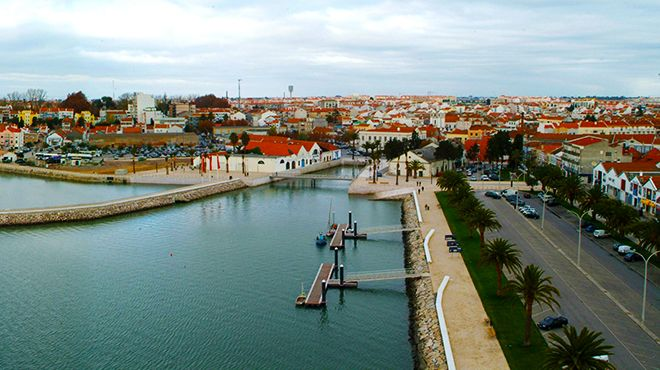
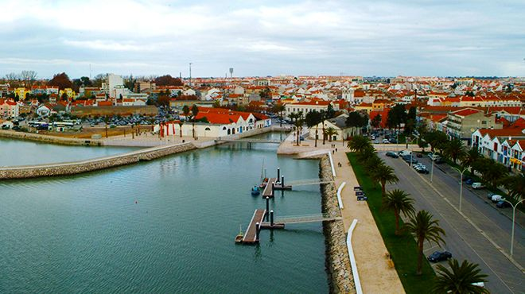

Informações
| Informações Relevantes sobre Montijo | População | |
|---|---|---|
| Área (km²) | Principais Atividades | |
| 348.62 | Agricultura | 55,732 |
| Criação de Toiros | 57,342 | |
| Aeroporto Futuro | Em Planejamento | |
5 curiosidades sobre Montijo
1. Origem do Nome: O nome Montijo tem origem na palavra "monte", referindo-se ao relevo acidentado da região, e "ijo", um sufixo que significa "pequeno". Assim, Montijo significa "pequeno monte".
2. Capital do Toiro Bravo: Montijo tem uma forte tradição taurina e é conhecida por ser uma das cidades mais importantes na criação do touro bravo em Portugal. A cidade tem uma rica história de touradas e festividades associadas a essa cultura.
3. Produção de Sal: No passado, Montijo foi um importante centro de produção de sal. A extração de sal nas salinas da região era uma das atividades económicas mais relevantes até meados do século XX.
4. Aeroporto Complementar de Lisboa: Há planos para a construção de um novo aeroporto na área do Montijo, que servirá como uma extensão do Aeroporto Humberto Delgado, em Lisboa, para aliviar o tráfego aéreo da capital.
5. Ponte Vasco da Gama: Montijo está localizada próxima à famosa Ponte Vasco da Gama, que, com seus 17 km, é uma das pontes mais longas da Europa e liga o município diretamente a Lisboa.